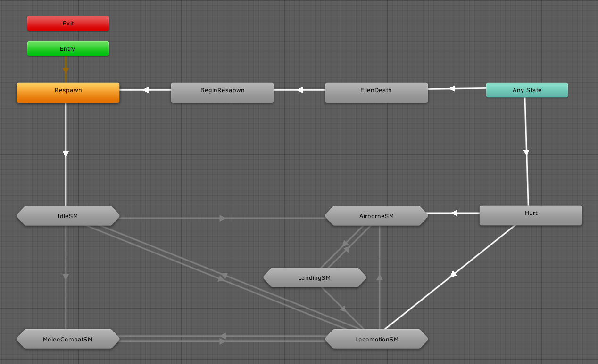
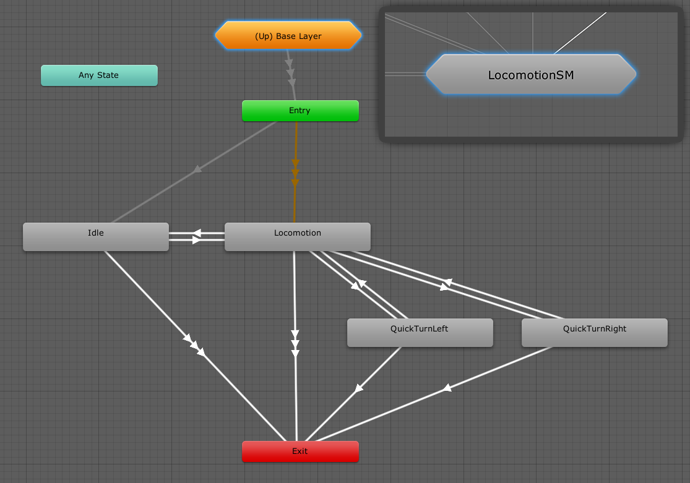

Mecanim and Animancer are extremely different systems so directly converting between them is not possible, but this page explains how the features of Animator Controllers correspond to the features of Animancer.
Animator Controllers

There are two main options regarding Animator Controllers in Animancer:
- Play them alongside Animancer as described on the Animator Controllers page.
- Replace them with Animancer features as described on this page.
- The Examples demonstrate how to play animations without Animator Controllers.
- The Generate Transition context menu functions on everything inside Animator Controllers (states, transitions, etc.) allow you to extract some of the details into Transition Assets. This includes transition durations, speeds, exit times, and the configuration of Mixer States from Blend Trees, but it does not include any logic like parameters or transition conditions because those things are handled entirely in scripts when using Animancer.
Animation Clips
Any AnimationClip that can be played in an Animator Controller (Humanoid or Generic) can also be played in Animancer. The Getting Animations page lists the most common ways to get and create them.
States

- Animancer doesn't require you to pre-define states, you just give it whatever
AnimationClipyou want to play. - You can use Transitions to pre-define details like
Speedalongside theAnimationClip. - When you first play an animation or transition, Animancer will create an
AnimancerStatefor it which allows you to control all details like itsSpeedandTime. Any time you play the same animation or transition on the same character, it will return that state.
Transitions

Animancer's Transitions work very differently to those in Animator Controllers:
- They allow you to set up details like the
Fade DurationandStart Timein the Inspector. - They do not define any conditions or logic to determine when the transition occurs. A transition is basically just a bunch of additional data you can use in a
Playcommand, so choosing when to callPlayis entirely up to your scripts.
The conditions in the above image will make the transition occur if the MeleeAttack trigger is set and the StateTime is greater than 0.16 and less than 1, which would look like this in a script:
[SerializeField] private AnimancerComponent _Animancer;
[SerializeField] private ClipState.Transition _MeleeAttack;
void MeleeAttack()
{
var normalizedTime = _Animancer.States.Current.NormalizedTime;
if (normalizedTime > 0.16f && normalizedTime < 1)
_Animancer.Play(_MeleeAttack);
}
- Instead of setting a trigger parameter, the script can just call the
MeleeAttackmethod when you want to attack. If you want it to keep trying to attack for a short time after the player presses the attack button, you can use an Input Buffer. - Instead of requiring a script to get the current state time to set the
StateTimeparameter every frame so that the transition condition can check it, the script can just use the current state time directly in its checks.
Parameters

Animancer has no direct equivalent to parameters since all the control logic is handled by your scripts. So if you want to choose between animations based on an int, you can just put an int field in your script then set it and check its value like any other variable.
If you have a custom curve in your animation which you want to access in a script, you can use an Animated Property.
Blend Trees

Animancer can play Blend Trees inside Controller States. It also has Mixer States which serve the same purpose but have significant differences in their implementation as described in the Blend Trees vs. Mixers section.
Sub-State Machines

Sub-State Machines are often used in Animator Controllers to simply group states visually in order to keep them organised rather than as actual logical constructs. In that case, they are unnecessary in Animancer since you can already arrange your animation references however you like. Using Unity's [Header] attribute or a [Serializable] type can be useful for organisation.
If you do actually want to have a state with other states inside it, Animancer's Finite State Machine system allows you to put a state machine anywhere, so you could simply give a state class its own state machine.
Layers

Animancer's Layers are created at runtime using scripts rather than being pre-defined in an Animator Controller, but other than that they are roughly equivalent.
State Machine Behaviours

Animancer's animation system has nothing like StateMachineBehaviours because it is not supposed to manage your logic, but its Finite State Machine system allows you to define your states as individual scripts which can be used to implement anything you would have done with a StateMachineBehaviour.
Inverse Kinematics

Turning on Inverse Kinematics is different in Animancer, but after that everything basically works the same. Unfortunately, due to limitations in the Playables API Unity will only ever call OnAnimatorIK with the layerIndex parameter set to 0.
Late Update
Any system that uses a LateUpdate method to modify things after the animation is applied but before the frame is rendered will work exactly the same with Animancer.
Animator API
The AnimancerComponent.Animator property allows you to access the Animator component directly if you need to, however many of its members do not work with Animancer (in most cases they are simply not relevant).
The following members work normally:
runtimeAnimatorController- Used to play Native Animator Controllers, in which case all of theAnimatormembers work normally in regards to the Animator Controller (but not for any separate animations played through Animancer).- Root Motion:
angularVelocity,ApplyBuiltinRootMotion,applyRootMotion,bodyPosition,bodyRotation,deltaPosition,deltaRotation,gravityWeight,hasRootMotion,isHuman,pivotPosition,rootPosition,rootRotation,velocity avatar,humanScale,isOptimizablecullingMode,updateModefireEvents- Bone Transforms:
GetBoneTransform,hasTransformHierarchy,SetBoneLocalRotation - Inverse Kinematics:
GetIKHintPosition,GetIKHintPositionWeight,GetIKPosition,GetIKPositionWeight,GetIKRotation,GetIKRotationWeight,leftFeetBottomHeight,pivotPosition,pivotWeight,rightFeetBottomHeight,SetIKHintPosition,SetIKHintPositionWeight,SetIKPosition,SetIKPositionWeight,SetIKRotation,SetIKRotationWeight,SetLookAtPosition,SetLookAtWeight,SetTarget,targetPosition,targetRotation isInitializedhasBoundPlayables,playableGraphRebindStringToHash- Works, but serves no purpose since Animancer doesn't rely on hash codes.
The following members do not work directly:
| Animator Members | Details / Alternative |
|---|---|
CrossFade, CrossFadeInFixedTime, Play, PlayInFixedTime |
Use AnimancerComponent.Play. See Playing Animations. |
GetAnimatorTransitionInfo, GetBehaviour, GetBehaviours, GetCurrentAnimatorClipInfo, GetCurrentAnimatorClipInfoCount, GetCurrentAnimatorStateInfo, GetNextAnimatorClipInfo, GetNextAnimatorClipInfo, GetNextAnimatorClipInfoCount, GetNextAnimatorStateInfo, HasState, IsInTransition |
AnimancerComponent.States allows you to access the details of any State that has been registered with a Key. Play also returns the state of the animation it starts. |
GetBool, GetFloat, GetInteger, GetParameter, IsParameterControlledByCurve, parameters, parameterCount, ResetTrigger, SetBool, SetFloat, SetInteger, SetTrigger |
As mentioned in the Parameters section, Animancer does not use them. |
GetLayerIndex, GetLayerName, GetLayerWeight, layerCount, layersAffectMassCenter, SetLayerWeight |
AnimancerComponent.Layers gives you access to the details of all Layers. |
keepAnimatorControllerStateOnDisable |
Use AnimancerComponent.ActionOnDisable instead. |
linearVelocityBlending |
Never worked properly anyway, but Mixers can usually achieve linear blending by disabling Synchronisation on any non-locomotion states (such as Idle or Attack) when blending them with locomotion states (such as Walk or Run). |
speed |
Use AnimancerPlayable.Speed instead. Though you will usually only want to modify the speed of a single animation using AnimancerNode.Speed. |
Update |
Use AnimancerComponent.Evaluate. |
MatchTarget, InterruptMatchTarget, isMatchingTarget |
No direct equivalent. Using a curve to control Inverse Kinematics may help. |
It is unknown whether or not the following members work: (please email animancer@kybernetik.com.au if you can confirm what these members are actually supposed to do so they can be tested):
feetPivotActivelogWarnings- Animation Recording:
playbackTime,recorderMode,recorderStartTime,recorderStopTime,StartRecording,StartRecording,StopPlayback,StopRecording- Probably works, but not tested.